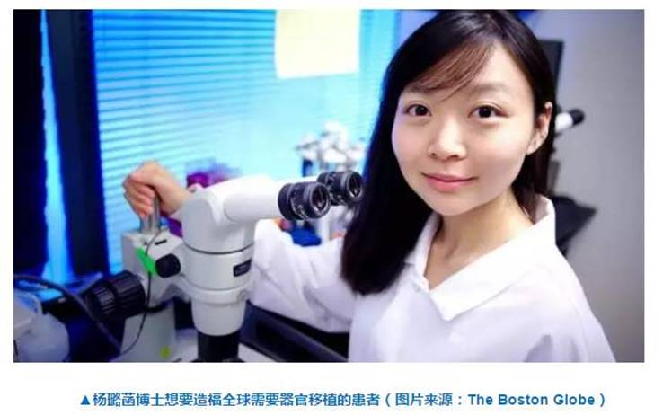

荣誉成就：2017年度“全球青年领袖”
有数据显示，全世界约200万人需要器官移植，但全世界有器官移植需要的病人却远远超出所捐献的器官数量，器官移植已成为全球困境。许多科学家致力于解脱这一难题，而杨璐菡也属于其中一位。
在北京大学毕业后，她前往哈佛大学攻读硕士学位，并开始参与一项特殊的研究工作——利用基因编辑技术，助力猪器官移植于人体。由于贡献突出，2014年，杨璐菡被福布斯杂志评为30岁以下30个科学医疗界领军人物之一。
2017年9月22日，杨璐菡在国际权威杂志《科学》上发表一篇论文，引起世界轰动。经过多次研究实验，杨璐菡等研究人员终于运用一种新兴技术，攻克了一直以来异种器官移植的难题，这为需要器官移植的病人带来希望。作为论文的第一作者，时年29岁的杨璐菡被人们誉为“基因剪刀手”。
面对外界的褒奖和喧哗，杨璐菡表示：“对我来说，这是一项‘24×7’的工作，即需要 7 天 24 小时的专注，尽可能时时刻刻注意力都在课题上。同时，这也是一个长期的工作，需要几年，几十年，甚至是一个终身的事业。”
